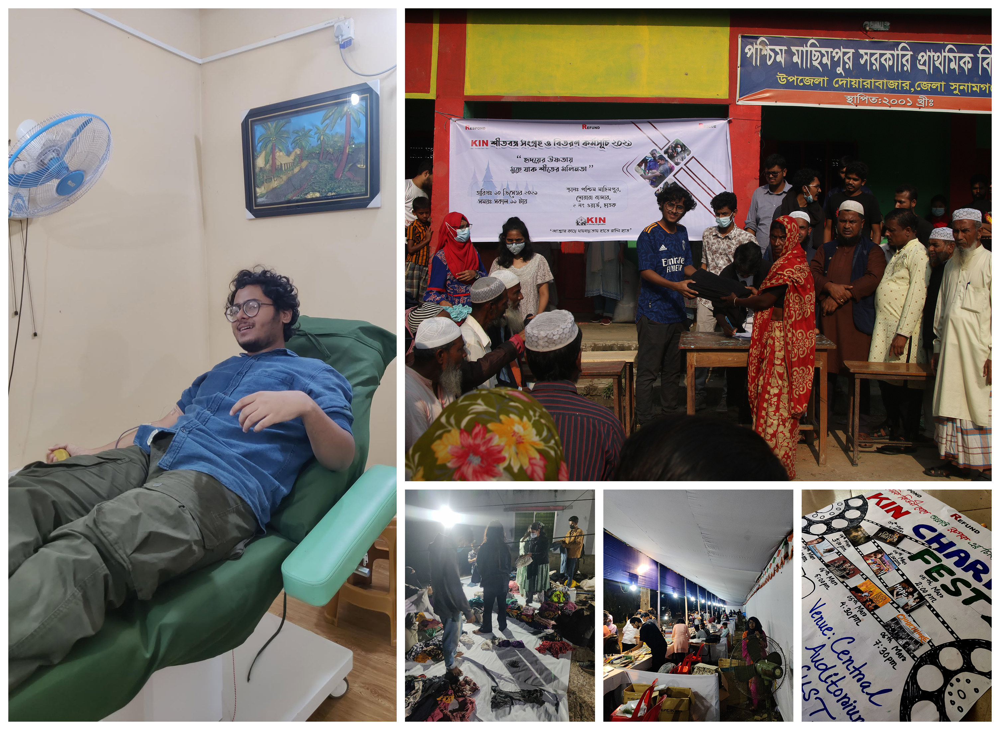
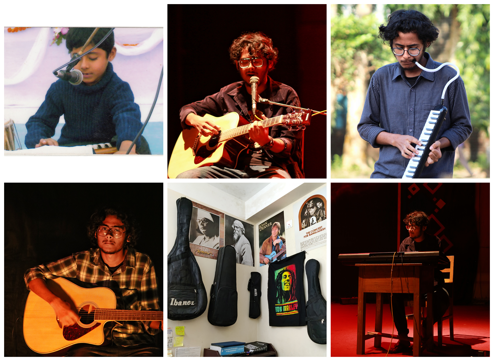
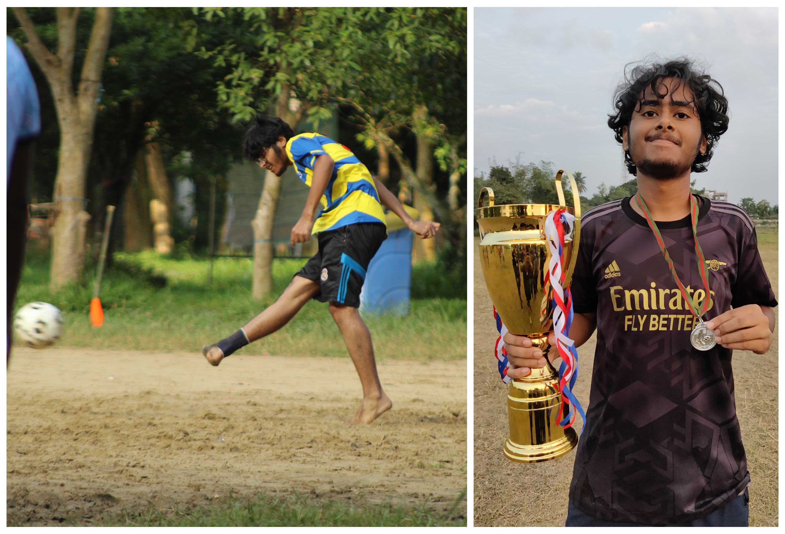

About me
I am a Master’s student in Biochemistry and Molecular Biology at Shahjalal University of Science and Technology (SUST), Sylhet. My research asks one question across different systems: which regulatory programs drive a cell’s behavior, and what happens when they fail? To answer it, I pair machine learning with experimental validation.
For my thesis at Bangladesh Medical University, I study the regulators of tumor cells in head and neck squamous cell carcinoma. I also work on other cancers there, from sample collection to histology, immunohistochemistry and qRT-PCR. Alongside this, I am exploring how gene expression shapes neuronal activity.
My research began with gene expression and regulation. I later brought machine learning and deep learning into my work to understand gene regulatory networks and the transcription factors that control them. I am especially interested in single-cell and spatial omics, which I use to uncover the mechanisms behind cancer and brain function.
Interests
- Gene Expression and Regulation
- Functional Genomics
- Cancer Biology
- Single-Cell and Spatial Transcriptomics
- Machine Learning and Deep Learning
- Systems and Computational Neuroscience
- Neural Dynamics and Optogenetics
Education
-
Master of Science (M.Sc.) in Biochemistry and Molecular Biology
Aug 2025 - Feb 2027 (Expected)
Shahjalal University of Science and Technology (SUST) [Thesis at BMU]
-
Bachelor of Science (B.Sc.) in Biochemistry and Molecular Biology (BMB)
Feb 2020 - Jun 2025
Shahjalal University of Science and Technology (SUST) [Graduation Delayed Due to Covid-19 Pandemic]
Experience
Research Assistant
Genomics Laboratory, Bangladesh Medical University (BMU)
Supervisors: Dr. S M Rashed Ul Islam, Associate Professor; Dr. Tanvir Hossain, Assistant Professor
Responsibilities and Experience:
- Detected malignant HNSCC samples via histopathology and screened for HPV using multiplex and nested PCR.
- Performed Sanger sequencing of the L1 viral gene and immunohistochemistry of host proteins (p16INK4a, pRB, cyclin D1, p53) for validation.
- Analyzed the HNSCatlas (274,911 cells, 78 HNSCC patients) using scVI to isolate tumor cells and identify tumor cell-specific genes, and inferred gene regulatory networks and key transcription factors with pySCENIC for qRT-PCR validation.
- Conducting molecular techniques to validate cancer-specific biomarkers retrieved through a multi-omics approach, including WGCNA, scRNA-seq, proteomics, and ChIP-seq.
Project:
- Genomic Exploration of HPV-Associated Head Neck Squamous Cell Carcinoma Occurrence in Bangladesh: An Integrative Histopathological Analysis and Molecular Profiling of HPV.
- Machine learning-driven identification and quantitative validation of cancer-specific biomarkers across multiple carcinomas.
Institutions in collaboration:
- Department of Surgical Oncology, Department of Otolaryngology–Head & Neck Surgery, and Department of Pathology, BMU; Department of Surgical Oncology, National Institute of Cancer Research & Hospital (NICRH); and BMB, SUST. More Info
GitHub:
Research Volunteer
The University of Queensland
Advisor: Dr. Tanvir Hossain, Assistant Professor
Responsibilities and Experience:
- Conducted bulk ncRNA-seq analysis on cancer cell lines, including ADMSC, BMMSC, HeLa, MCF7, MDAMB231, TM6, A549, H1975.
- Analyzed the expression profiles of Y and U miRNAs to examine their significance in extracellular vesicles (EVs), epithelial–mesenchymal transition (EMT) and in lung cancer.
- Filtered ncRNAs using ncRNAtools (RNAcentral API) and applied RFE-RF for feature selection in ML analysis.
- Discovered snc-markers of EMT, EV, and lung cancer and common among all and analyzed their qRT-PCR validation result.
Project:
- Chip development for small non-coding RNA (sncRNA) isolation and marker-based cancer detection.
GitHub:
Undergraduate Research Assistant
Advanced Bioinformatics Lab, BMB, SUST
Supervisors: Dr. Tanvir Hossain, Assistant Professor; Papia Rahman, Lecturer
Responsibilities and Experience:
- Applied a variational autoencoder (VAE) with integrated gradients to 643 Oropharyngeal Carcinoma transcriptomes integrated from 26 datasets to identify candidate genes from latent-space attribution.
- Assessed the candidate genes’ differential expression, copy number, mutation, and survival association.
- Performed differential methylation analysis on TCGA-HNSC 450K arrays and integrated hyper- and hypomethylated promoter genes with DEGs.
Project:
- Beyond Differential Expression: Deep Neural Profiling reveals RAP1GAP2 as a latent regulator of tumor invasion in Oropharyngeal Carcinoma.
GitHub:
Undergraduate Research Assistant
Laboratory of Genomics and Transcriptomics, BMB, SUST
Supervisor: Dr. Ajit Ghosh, Associate Professor
Responsibilities and Experience:
- Leveraged random forest and XGboost to identify key salinity stress regulators in tomato, leading to the development of BioSalT.
- Extracted RNA from plant samples, quantified by Nanodrop, and performed PCR to confirm cDNA synthesis and primer specificity; visualized products on agarose gels.
- Validated candidate biomarkers by qRT-PCR using the ΔΔCt method to compute relative log2 fold changes.
- Profiled conserved domains and motifs of m6A regulators, built phylogenies (1000 bootstrap) in MEGA and visualized results in iTOL.
Projects:
- Genome-wide identification and characterization of m6A regulatory genes in Soybean: Insights into evolution, miRNA interactions, and stress responses.
- BioSalT (biomarkers of salinity stress in tomato): a multigene machine learning model for early salinity stress detection in Solanum lycopersicum.
GitHub:
Undergraduate Research Assistant
Bioinformatics Lab, BMB, SUST
Supervisors: Dr. Tanvir Hossain, Assistant Professor; Saifuddin Sarker, Research Officer; Preonath Chondrow Dev, Research Officer
Responsibilities and Experience:
- Implemented a full RNA-seq workflow (bash) for gene quantification from GEO/SRA FASTQ files and performed differential expression analysis with edgeR, limma, and DESeq2.
- Built gene co-expression and network models to identify functional modules and hub genes enriched in biological pathways.
- Benchmarked 15 supervised learning models using PyCaret and validated biomarkers with the best-performing classifiers.
- Developed omicML (GUI) to enable biologists to build biomarker algorithms from transcriptomic data.
Projects:
- Identification of potential biomarkers for 2022 Mpox virus infection: a transcriptomic network analysis and machine learning approach.
- markerMPXV: upregulation of RRAD and building of a biomarker algorithm for Mpox virus infection in comparison with other viral pathologies. [Used as a case study for omicML]
- omicML: an integrative tool of bioinformatics and machine learning algorithms to identify transcriptomic biomarkers
GitHub:
Independent Projects
Self-directed learning projects
Projects I took on independently to learn new methods hands-on:
- Parkinson’s disease scRNA-seq: end-to-end analysis of cerebrospinal fluid from 20 donors (Parkinson’s and healthy controls) in Scanpy and Seurat, covering QC, Harmony integration, clustering, cell-type annotation, pseudobulk DESeq2, MrVI and pathway/TF analysis. GitHub: scRNA-seq
- scRNA-seq pipeline (Seurat): QC, clustering, cell-type annotation, trajectory, differential expression and enrichment analysis in R. GitHub: scRNA-seq
- Patch-seq and epilepsy: linked gene expression to neuronal electrophysiology (firing rate, rheobase, input resistance) with interpretable models on Allen Institute Patch-seq data, in a Snakemake pipeline. GitHub: Celltypes-Patchseq-Epilepsy
- Allen Brain data: explored Allen Institute cell-type, electrophysiology and Patch-seq datasets in Python. GitHub: Allen-Brain
- Neuroimaging: set up an R workflow for brain MRI morphometry and brain network analysis. GitHub: Neuroimaging
- DeepFoldChange: a deep learning framework that emulates statistical models for differential gene expression analysis. Compiled a multi-source gene expression database and trained it with an MLPRegressor. GitHub: DeepFoldChange
- Computational neuroscience: reran and modernized classic models from the University of Washington course (LNP, Poisson neurons, Hodgkin–Huxley, neural decoding, information theory). GitHub: Computational-Neuroscience
Publications & Manuscripts
Conference Paper
Projects
Cancer-Specific Biomarkers across Multiple Carcinomas

GitHub Profile

YouTube
Amino Acids

Nucleotide base


Extracurricular Activities
KIN School

KIN School is a magical place, full of little magicians. And why do I call them that?
All of life’s worries simply just fade away just by being around them. Especially on Fridays, when I used to enter the shahjalal university schoolyard with my guitar in the afternoon, many of them would run toward me shouting, “Joy Vaiya! Joy Vaiya!” Their innocence and love made me forget all my academic pressures and struggles of life.
I really miss them nowadays. I’ve been busy with my career and research and rarely get the chance to strum my guitar with their voices around me…
The pictures above capture some beautiful moments with them!
KIN (A Voluntary Organization)

I was a scout during my school life, and there was a motto I promised to follow, which is to help at least one person every day, in any way I can. In university, KIN gave me the opportunity to continue doing something meaningful for people in need.
I have donated blood multiple times, and the most priceless thing is that some of the people I helped still call me to ask about my health. (First picture on the left.)
In the second picture, I was distributing blankets. In the second row, second column, we were sorting the collected winter clothes. In the next picture, I was selling books at the charity book fair, and in the last one, the poster you see was designed by me to invite students from other universities to our charity film festival.
Teaching & Mentoring
Growing up observing my father serve as a high schoolteacher for three decades cultivated my innate desire to teach and guide others. The first real opportunity came during the COVID-19 lockdown, when I organized an online science batch for students who had just completed SSC. I even built a handmade stand to hold my phone during classes. With the earnings from my first month, I gifted a watch to Shaharul Vai, my Physics and Chemistry mentor whose notes I used in my lectures, cleared a hostel due, and supported my family at home.
From that starting point, I led two batches of HSC students, teaching Physics, Biology, ICT, Chemistry and Math. Later, I taught SSC-level physics and biology at a coaching center in Sylhet, followed by two full university-admission batches where many students secured places in major public universities. Altogether, through online classes, coaching centers, and private tutoring, I taught and mentored more than 70 students.
Travelling and Photography

I love taking photos and feel passionate about capturing the harmony of nature. Looking back at those pictures in my archive is like pressing Ctrl + Z, which instantly takes me back to that exact moment.
Here are some moments I captured during my travels.
Music

Everyone in my family is involved in music. Though I was initially pressured to learn, I eventually fell in love with it.
In 2013, I secured first place in classical music at the Zila Shilpakala Academy, Narsingdi. Overall, I won prizes in both school and national competitions, including Best Singer in Classical Music at Mohammadpur Thana (College time).
As my fascination with different musical instruments grows, I’ve already learned to play more than 12 (you can find some of them pictured above), and I aspire to play every instrument that exists in the world.
Here are a few moments from my performances in different programs at SUST.
Sports

Since childhood, I’ve loved playing sports, especially football. I started watching football because of Kaká, and I’ve been an ultra Real Madrid fan. I played as a midfielder for the BMB team in the SUST Inter-Department Football Tournament 2023.
The picture on the left is from a match during BMB Sports Week 2022, and the one on the right was taken when we became runners-up in the BMB Champions League 2022.
Reading Books

Honestly, I’m not an avid reader, but I truly enjoy reading. This habit grew in me from my research teammates, especially Kabir.
Here are some of the books I’ve really liked and found inspiring.